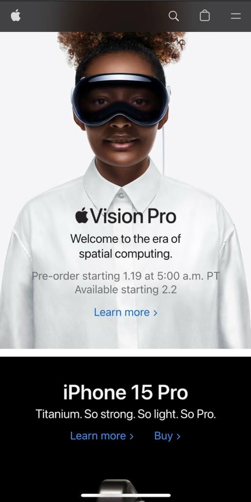
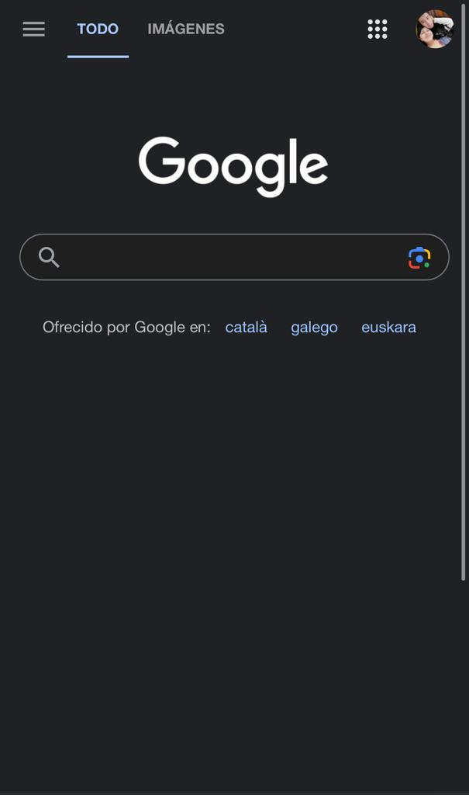

Visual Hierarchy
Apple
apple.com The Apple.com home page focuses on offering a simple and straightforward experience. The top navigation bar contains only a small number of options, and the main page displays images and a clear message related to organization and what is important visually.This creates a direct visual and emotional connection between the website and users.
Hick's Law
Wix
wix.comThe application of Hick's Law in the design of the Wix website is evident in the intuitive and simplified interface it offers users for creating websites. Wix has taken a user-centered design approach by providing tools and customization options, but at the same time, organizing these options in a logical and accessible way.
Fitt's Law
Google Search
google.com Google Search applies Fitts' Law effectively in its design, prioritizing accessibility and efficiency in user interaction. The search field, which is the main function of the page, is highlighted with a considerable size and placed in the center of the home page. Additionally, the search field has a click-sensitive area that spans the entire length of the field.